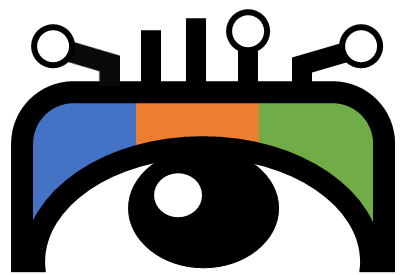
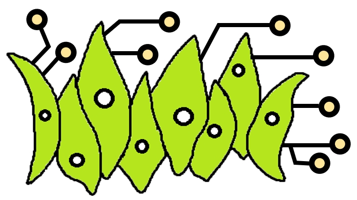

I am an Assistant Professor/Lecturer at
Ocean University of China. My research focuses on multimedia forensics and computer vision.
I have published more than 30 papers in prestigious conferences and
journals, with
total

I was a Senior Research Scientist at the Department of Computer Science and Engineering of University at Buffalo, SUNY, working with Siwei Lyu. I was a summer intern at GE glocal research center during 2016 - 2018. I received Ph.D. degree in computer science at University at Albany, SUNY in 2020, advised by Siwei Lyu (IEEE/IAPR Fellow). I received M.S. degree in Computer Science in 2015 and B.S. degree in Software Engineering in 2012 at Shandong University.
📢 Opening! Currently I am leading the VAS lab . Our lab has multiple openings. Please drop me an email if you are interested in internship / M.S. program. I also advise the POVA group , which focuses on underwater computer vision reserach. Drop me an email if you are interested.
🎉 News
- [2025.07]: We have released Celeb-DF++ benchmark, an extension of earlier Celeb-DF dataset. 📌 📌
- [2025.11]: Three master students are awarded an enterprise scholarship (¥2w). Congratulations! New!
- [2025.10]: One paper on domain adaptation is accepted by TIP 2025. New!
- [2025.10]: I gave a talk on advances on visual forensics PRCV 2025. New!
- [2025.09]: Elected among World's Top 2% Scientists 2025 by Stanford University. New!
- [2025.07]: One paper on proactive deepfake detection is accepted by TDSC 2025. New!
- [2025.05]: One paper on underwater stereo matching is accepted by TCSVT 2025.
- [2025.03]: One paper on image manipulation detection is accepted by ICME 2025.
- [2025.02]: Two papers on deepfake detection are accepted by CVPR 2025.
- [2025.02]: The work of TSOM is elected as WACV 2025 Oral.
- [2025.01]: I gave a talk on face forensics in the wild at CSIG Young Scholars forum.
- [2024.11]: One paper on phytoplankton tracking is accepted by TCSVT.
- [2024.11]: Awarded BMVC outstanding reviewer.
- [2024.10]: One paper on sequential deepfake detection is accepted by WACV.
- [2024.09]: One paper on deepfake detection is accepted by NeurIPS.
- [2024.09]: Elected among World's Top 2% Scientists 2024 by Stanford University.
- [2024.09]: One paper on quality-agnostic deepfake detection is accepted by ACCV.
- [2024.08]: One paper on 3D adversarial meshes are accepted by PG.
- [2024.07]: Two papers on image manipulation detection are accepted by BMVC.
- [2024.07]: One paper on transferable deepfake detection is accepted by IEEE TIFS.
- [2024.07]: One paper on generalizable deepfake detection is accepted by ECCV.
- [2024.05]: One paper on multi-face deepfake detection is accepted by IEEE TCSVT.
- [2024.04]: One paper on deepfake detection is accepted by IEEE TIFS.
- [2024.04]: One paper on deepfake defense is accepted by IEEE TETC.
- [2024.04]: One paper on image-text retrieval is accepted by ICMR.
- [2024.02]: One paper on image-text retrieval is accepted by KBS.
- [2024.01]: One paper on deepfake defense is accepted by CVIU.
- [2023.12]: One paper on adversarial robustness is accepted by ICASSP.
- [2023.11]: I gave a talk at a forum in CSIG ChinaFMS conference 2023.
- [2023.10]: One paper on adversarial robustness is accepted by CVIU.
- [2023.07]: I gave a talk at a forum in CCF CFTC 2023 on Recent Advances on CV Security.
- [2023.06]: One ICME paper entitled Forensics Forest is selected as Oral.
- [2023.05]: A dataset on phytoplankton observation is accepted by JMSE.
- [2023.05]: One paper on Semantic Segmentation is accepted by IEEE TNNLS.
- [2023.04]: One paper on Universal Domain Adaptation is accepted by IEEE TCSVT.
- [2023.03]: Two papers on DeepFake defense are accepted by ICME.
- [2023.02]: One paper on Transferable Adversarial Attack is accepted by COSE.
- [2022.12]: I gave a talk at CCBR 2022 on Recent Advances on AI Security.
- [2022.11]: One paper on DeepFake detection is accepted by Pattern Recognition.
- [2022.08]: I gave a tutorial at MIPR 2022 on DeepFake Creation, Detection and Obstruction.
- [2022.07]: I gave a tutorial at ICME 2022 on DeepFake creation and detection.
- [2022.07]: One paper on face synthesis is accepted by PRL.
- [2022.06]: One paper on DeepFake defense is accepted by ICIP.
- [2022.06]: One paper on DeepFake detection is accepted by Pattern Recognition.
- [2022.05]: One paper on DeepFake detection is accepted by MIPR.
- [2022.02]: One book chapter is publised on Handbook of Digital Face Manipulation and Detection, Springer.
- [2021.12]: One book chapter is publised on Deep Learning-Based Face Analytics, 2021. Springer.
- [2021.10]: One paper on adversarial attack is accepted by CVIU 2021.
- [2021.08]: One paper on scene parsing is accepted by TNNLS 2021.
- [2021.08]: I gave a tutorial at IJCB 2021 on Trustworthy Biometrics.
- [2021.07]: One paper on backdoor attack is accepted by ICCV 2021.
- [2021.06]: With my PhD advisor Prof. Siwei Lyu, I gave a tutorial at ICASSP 2021 on DeepFake Generation and Detection [Part 1] [Part 2] [Part 3].
- [2021.06]: We are releasing DeepFake Game Competition (DFGC) dataset [Here]
- [2021.05]: We are holding DeepFake Game Competition (DFGC) [Here]
- [2021.03]: One paper on DeepFake-o-meter is accepted by SADFE in conjunction with the IEEE S&P 2021
- [2021.02]: One paper is accepted by ICASSP 2021.
- [2020.02]: Our paper on Celeb-DF is accepted by CVPR 2020.
📝 Selected publications (+ Advised student, ✉️ Corresponding author, * Equal contribution)

Jinkun Jiang+, Qingxuan Lv, Yuezun Li✉️, Yong Du, Junyu Dong✉️, Sheng Chen, Hui
Yu
IEEE Transactions on Image Processing (TIP), 2025.
[Code]
[CCF A]

Delong Zhu+, Yuezun Li✉️, Baoyuan Wu,
Jiaran Zhou, Zhibo Wang, Siwei Lyu
IEEE Transactions On Dependable And Secure Computing
(TDSC), 2025. (Extended from ICME 2023)
[Code]
[CCF A]
Xinjie Cui+, Yuezun Li✉️, Ao Luo,
Jiaran Zhou, Junyu Dong
IEEE Conference on Computer Vision and Pattern Recognition
(CVPR), 2025.
[Code]
[CCF A]

Shuaiwei Yuan+, Junyu Dong, Yuezun Li✉️
IEEE Conference on Computer Vision and Pattern Recognition
(CVPR), 2025.

Qingxuan Lv+, Junyu Dong✉️, Yuezun Li✉️, Sheng Chen, Hui Yu, Shu Zhang, Wenhan Wang
IEEE Transactions on Circuits and Systems for Video Technology
(TCSVT), 2025.
[Code]
[CCF B]

Yunfei Li+, Yuezun Li✉️, Xin Wang,
Baoyuan Wu, Jiaran Zhou, Junyu Dong
IEEE/CVF Winter Conference on Applications of Computer Vision
(WACV), 2025.
(Oral)
[Code]

Hanzhe Li+, Jiaran Zhou, Yuezun Li✉️,
Baoyuan Wu, Bin Li, Junyu Dong
Annual Conference on Neural Information Processing Systems
(NeurIPS), 2024.
[Code]
[CCF A]
Qingxuan Lv+, Yuezun Li✉️, Junyu
Dong✉️, Sheng Chen, Hui Yu, Huiyu Zhou, Shu Zhang
IEEE Transactions on Information Forensics and Security
(TIFS), 2024.
[Code]
[CCF A]

Jiucui Lu+, Jiaran Zhou✉️, Junyu Dong, Bin
Li, Siwei Lyu, Yuezun Li✉️
IEEE Transactions on Information Forensics and Security
(TIFS), 2024. (Extended from ICME 2023)
[Code]
[CCF A]

Cong Zhang+, Honggang Qi, Shuhui Wang, Yuezun Li✉️, Siwei Lyu
IEEE Transactions on Circuits and Systems for Video Technology
(TCSVT), 2024.
[Code]
[CCF B]
Yang Yu+, Qingxuan Lv, Yuezun Li✉️,
Zhiqiang Wei, Junyu Dong✉️
IEEE Transactions on Circuits and Systems for Video Technology
(TCSVT), 2024.
[Code]
[CCF B]

Qingxuan Lv+, Yuezun Li✉️, Junyu
Dong✉️, Ziqian Guo.
IEEE Transactions on Circuits and Systems for Video Technology
(TCSVT), 2023.
[CCF B]

Han Chen*, Yuezun Li*, Dongdong Lin,
Bin Li, Junqiang Wu.
Pattern Recognition (PR), 2023.
[CCF B]

Yuezun Li, Yiming Li, Baoyuan Wu, Longkang Li, Ran He,
Siwei Lyu.
IEEE International Conference on Computer Vision (ICCV),
2021.
[Code]
[CCF A]

Yuezun Li, Xin Yang, Pu Sun, Honggang Qi, Siwei Lyu.
IEEE Conference on Computer Vision and Pattern Recognition
(CVPR), 2020.
[Dataset download]
[CCF A]

Yuezun Li, Siwei Lyu.
IEEE Conference on Computer Vision and Pattern Recognition
(CVPR) Workshop on Media Forensics, 2019.
[Code]

Xin Yang*, Yuezun Li*, Siwei Lyu.
IEEE International Conference on Acoustics, Speech, and Signal
Processing (ICASSP), 2019
[Code]
[CCF B]
Xin Yang, Yuezun Li, Honggang Qi, Siwei Lyu.
ACM Workshop on Information Hiding and Multimedia Security
(IHMMSec), 2019
[CCF C]
Yuezun Li, Xiao Bian, Ming-Ching Chang, Siwei Lyu.
British Machine Vision Conference (BMVC), 2019.
[CCF C]

Yuezun Li, Ming-Ching Chang, Siwei Lyu.
IEEE International Workshop on Information Forensics and Security
(WIFS), 2018
[Code]
/
[Dataset download]
Yuezun Li, Daniel Tian, Ming-Ching Chang, Xiao Bian, Siwei
Lyu.
British Machine Vision Conference (BMVC), 2018
[Code]
[CCF C]
🔔 Preprints

Yuezun Li✉️, Delong Zhu+, Xinjie
Cui+, Siwei Lyu
arXiv:2507.18015, 2025. (An extension of Celeb-DF dataset)
[Code]
Yunfei Li+, Yuezun Li✉️, Baoyuan Wu,
Junyu Dong, Guopu Zhu, Siwei Lyu
arXiv:2404.13873, 2025.
(Extended from WACV 2025 (oral))
[Code]
Xinjie Cui+, Yuezun Li✉️, Delong Zhu,
Jiaran Zhou, Junyu Dong, Siwei Lyu
arXiv:2411.19715, 2025. (Extended from CVPR 2025)
[Code]

Pu Sun+, Honggang Qi✉️, Yuezun Li✉️
arXiv:2409.03200, 2024.

Yuezun Li, Xin Yang, Baoyuan Wu, Siwei Lyu
arXiv:1906.09288, 2019.
(preliminary version of TDSC 2025)